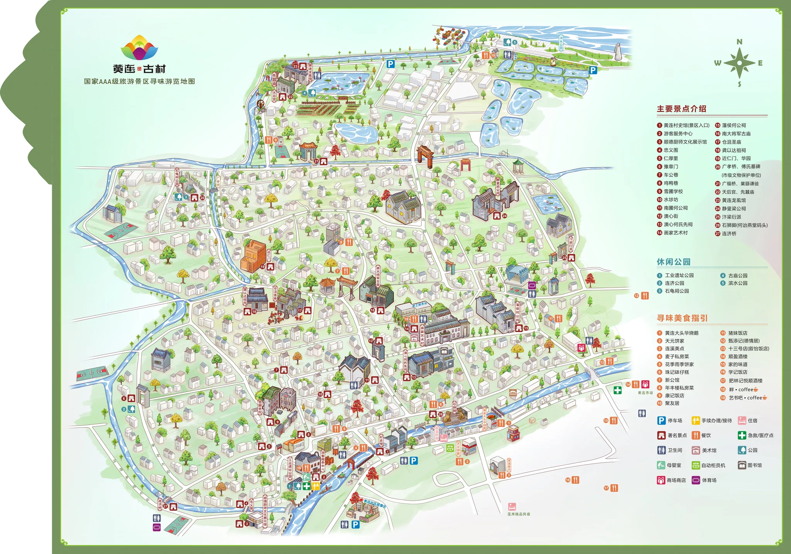

粤韵童行·童谣联动地图
黄连古村
坐标标注
线路推荐

＋
100%
−
复位
×
×
当前地点
查看介绍
一键导航
单指拖动 · 双指或滚轮缩放
×
选择打开方式
前往目的地
×
接入真实经纬度后，可选择常用地图规划路线。
高德地图
›
百度地图
›
腾讯地图
›
🍎
Apple 地图
›
复制地点信息
云赏黄连 · 游玩线路
选择一条路线
×
半日游
古村精华线
约 3 小时 · 7 站
从黄连村史馆出发，经游客服务中心、顺德厨师文化展示馆、雪圃学校、澳心何氏先祠、画家艺术村，最后到达石狮脚。
一日游
古村深度环线
约 6 小时 · 13 站
从黄连村史馆出发，依次游览游客服务中心、顺德厨师文化展示馆、雪圃学校、仓沮圣庙、石龟祠公园、古庙公园、黄连龙虱馆、滨水公园、南大将军古庙、澳心何氏先祠、画家艺术村和石狮脚。